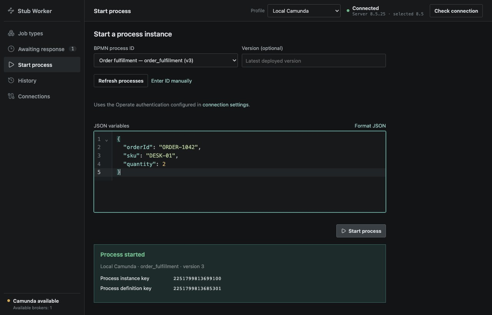
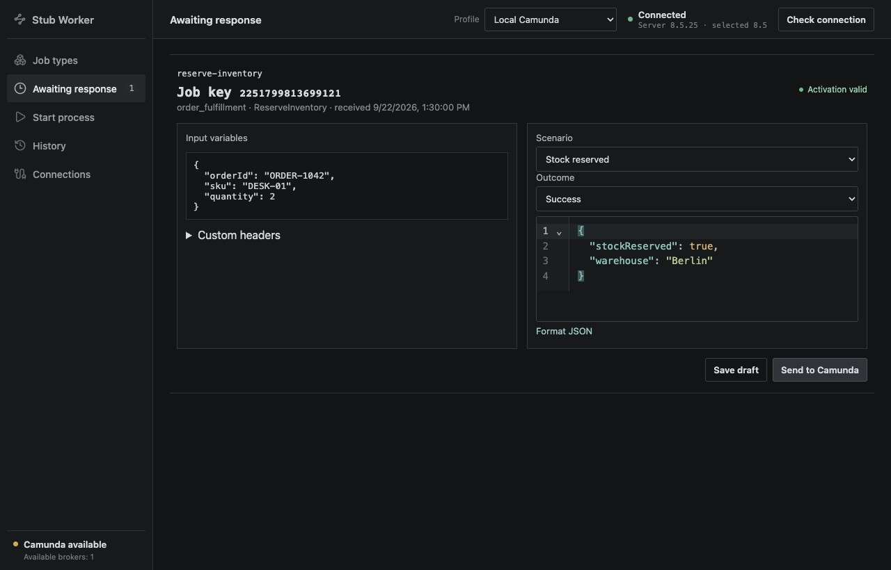
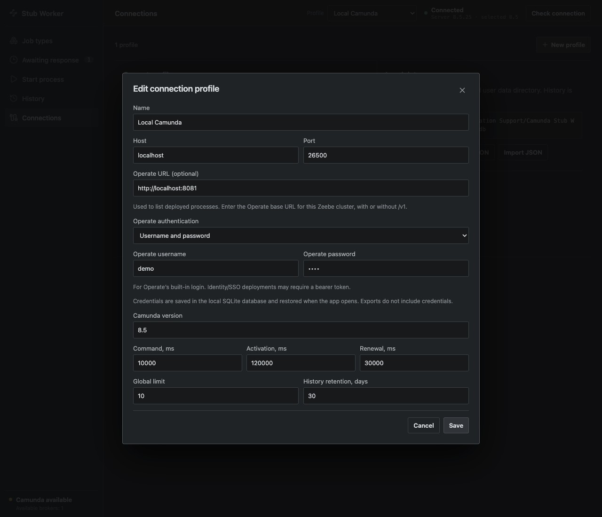

Test your process.
Stub the workers.
Start a deployed process, choose how its jobs respond, and inspect the results. A desktop app for local Camunda 8 development, without writing worker code.
macOS · Windows · Linux

Choose the outcome. Return success, throw a business error, or simulate a technical failure.
Control the response. Run automatically or inspect and respond to jobs manually.
Start from the app. Pick a deployed process from Operate or enter its ID, then supply a version and JSON variables.
From deployment to process instance.
Browse deployed processes through the Operate API, refresh after deploying a new model, or enter a BPMN process ID manually. Choose a specific version or use the latest, add JSON variables, and get the new instance key.

Inspect a job before you respond.
Review input variables, choose a response scenario, and edit the JSON before sending it. Switch to automatic mode for repeatable test runs, then review response attempts in History.

Set up your connection once.
Keep your Zeebe address, Operate URL, and authentication in one connection profile. Use an Operate username and password, a bearer token, or no authentication. Saved settings are restored when you reopen the app.

Configuration and history stay on your computer. Saved passwords and tokens are stored in plaintext in the local SQLite database and omitted from profile exports.
Screenshots show the current app UI with illustrative sample data.
For local Zeebe connections; verified with 8.5.25. Operate v1 is optional and must connect to the same cluster. Deploy BPMN models with an external tool. Builds are unsigned. See installation and requirements.